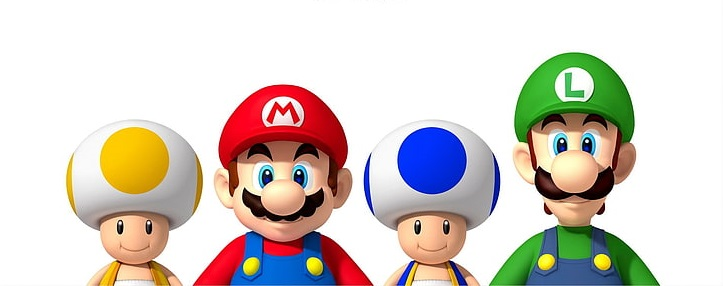
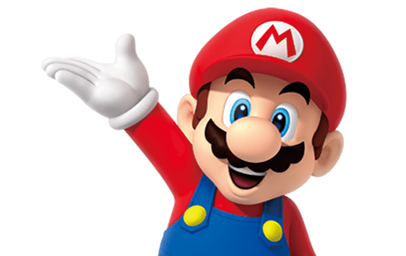
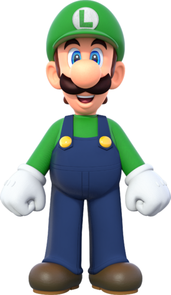
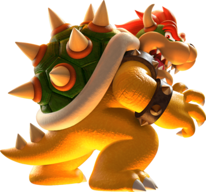

Видеоигра в жанре платформера, разработанная и выпущенная в 1985 году японской компанией Nintendo для платформы Famicom. Занесена в «Книгу рекордов Гиннесса» как самая продаваемая игра в истории. После успеха игры её главный герой, Марио, стал символом компании Nintendo и одним из самых известных игровых персонажей в мире.

Луиджи — это младший, но более высокий, брат Марио и значительный протагонист медиафраншизы Mario. Он живёт в тени Марио. Иногда труслив, а иногда и героичен. Но всё же Луиджи часто помогал Марио и сражался вместе с ним. Он впервые появился в Mario Bros.. Там он был опцией для второго игрока. После того, как режим для двух игроков был исключён из многих основных игр серии Super Mario, начиная с Super Mario Land, Луиджи получил личные свойства и стал более индивидуальным, став большим персонажем в франшизе Mario. Это особенно видно в игре Luigi's Mansion и серии игр Mario & Luigi.
Боузер — это мажорный персонаж и основной антагонист медиафраншизы Mario. Он большой, сильный, огнедышащий купа, который возглавляет Купа Отряд, антагонистскую организацию. Боузер был заклятым врагом Марио с первого появления в Super Mario Bros. Он неоднократно похищал или пытался похитить принцессу Пич, чтобы победить Марио или захватить Грибное королевство. Характерные черты Боузера: чудовищная внешность, громкий рёв, выдыхание огня, жестокость, бесконечный конфликт с Марио и неразделённая любовь к Пич.
